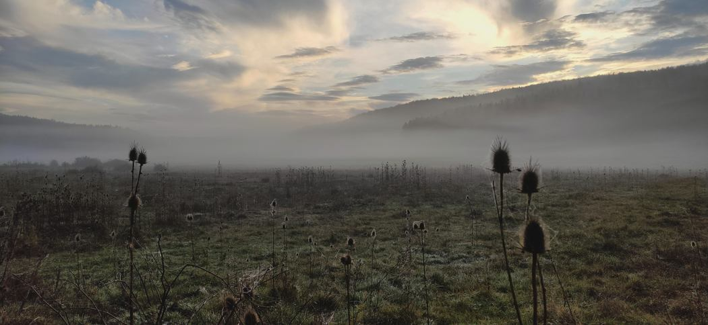

Doğaya yakından.
Mantarlar, mağaralar ve etrafımızdaki canlılar.
Arazide gözlemliyor, mikroskopta inceliyor, öğrendiklerimi burada kaydediyorum. Funginuri; saha çalışmalarımın, birlikte yaptığımız türsayların ve doğayı tanıma çabamın arşivi.

01↗02↗03↗
Türsaylar
Birlikte tuttuğumuz canlı kayıtları. Gözlemler, haritalar ve istatistikler.
Gözleme başla
iNaturalist’i tanı; canlıları nasıl belgeleyebileceğini öğren.
BounMantar.
Boğaziçi’nde doğa gözlemi, topluluk çalışmaları ve arazi etkinlikleri.
Sahadan mikroskoba.
Bir mantarın yaşam ortamı, bir yaprağın alt yüzü, bir mağaranın karanlık bölgesi. Ayrıntılara bakmak, yeni soruların başlangıcı.